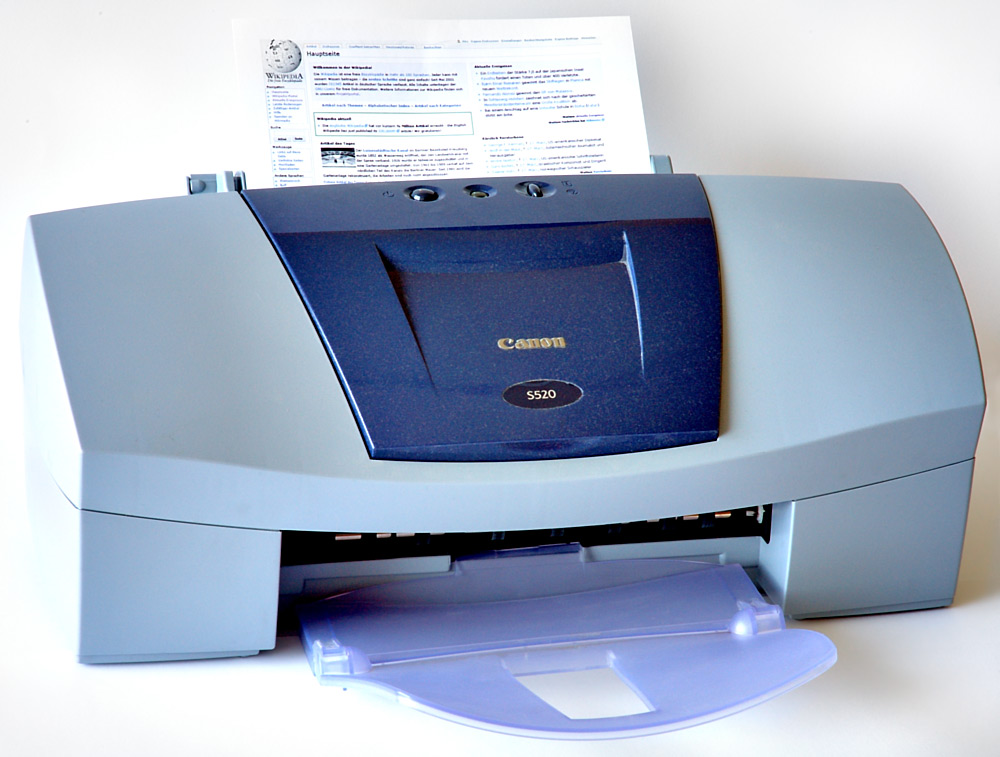

Tipos de impresoras:
Impresoras láser
Las impresoras láser se caracterizan por su elevada calidad de impresión, velocidad y una relación coste por
página muy económica. Su funcionamiento es similar a una fotocopiadora. Un haz de luz se aplica sobre un tambor
electrostático que cambia la carga de la superficie y posteriormente la imagen impregnada se transfiere al papel por contacto.
En el mercado podemos encontrar varios tipos de impresoras láser:
Impresoras láser monocromo:
Estos dispositivos láser solo pueden imprimir en un color, que por norma general suele ser el negro.
Son muy rápidas y tienen un coste de impresión muy bajo, por lo que son la opción ideal si tenemos un alto volumen de trabajo mensual de documentos en blanco y negro.
Impresoras láser a color:
Con las impresoras láser a color podemos realizar copias de alta calidad en blanco y negro y también con colores nítidos
y bien definidos. Se trata de máquinas potentes y versátiles, por lo que es habitual encontrarlas en todo tipo de negocios y hogares.
Impresoras láser multifunción:
Auténticos centros de trabajo que nos permiten integrar una amplia variedad de tareas en un solo aparato. Las impresoras láser multifunción,
además de imprimir, pueden incluir escáner, fotocopiadora, fax, lector de tarjetas SD, puertos USB y otros elementos para mejorar su conectividad, como el Bluetooth y el Wifi.
Impresoras de inyección de tinta:
Las impresoras inkjet o de inyección son habituales en hogares y pequeñas oficinas que generan una cantidad pequeña de documentos al mes.
Las tintas son aplicadas directamente al papel con ayuda de unos inyectores, obteniendo un resultado de gran calidad con una inversión inicial muy económica.
Al igual que en los modelos láser, podemos encontrar impresoras de tinta a color o monocromas, así como multifnciones.
Impresoras de inyección monocromas:
Si no vamos a imprimir documentos a color, las impresoras de tinta en blanco y negro son una excelente opción para nuestra actividad. Silenciosas,
rápidas y con un estándar de calidad muy alto, reproduciendo caracteres nítidos y bien definidos.
Impresoras de inyección a color:
Este tipo de impresoras utilizan por norma general un cartucho para el negro y otro para el color que contiene amarillo, cian y magenta, a partir de
los cual se puede imprimir cualquier color con una calidad fotográfica. Son perfectas si tenemos que trabajar con mapas, imágenes y gráficos, proporcionándonos más versatilidad en nuestra empresa.
Impresoras de inyección multifunción:
La multifunción de tinta incluye opciones adicionales como escáner, fotocopiadora, fax y mayor conectividad. Ahorramos espacio y consumo,
facilitando el acceso al equipo de trabajo y sin depender de los servicios de terceros.
Impresoras 3D:
Los equipos 3D han revolucionado el concepto de impresión, ya que permiten imprimir todo tipo de objetos a partir de un diseño.
Las aplicaciones son múltiples: desde el campo de la medicina, con la construcción de prótesis y otros elementos similares, a los sectores
industriales que requieren piezas específicas para su funcionamiento.

Pasos detallados
1. Abra el Panel de control (cf. Configuración general - Acceder a la Configuración y al Panel de control), active la categoría Hardware y sonido y luego el vínculo Configuración avanzada
de la impresora de la subcategoría Dispositivos y impresoras.
2. Active si es preciso el vínculo La impresora que quiero no está en la lista de la ventana Elegir un dispositivo o una impresora para agregar a este equipo.
3. Active la opción Agregar una impresora local o de red con configuración manual de la ventana Buscar una impresora por medio de otras opciones.
4. Active el botón Siguiente.
Si desea Usar un puerto existente, deje marcada la opción correspondiente y, dependiendo de si la impresora utiliza un puerto paralelo
(LPT1, LPT2, LPT3), un puerto serie (de COM1 a COM4) o el puerto local (PORTPROMPT), abra la lista asociada y active la opción correspondiente.
Si dispone de una impresora con interfaz de red, active la opción Crear un nuevo puerto, abra la lista Tipo de puerto y elija una de las opciones siguientes:
Local Port: para conectar el dispositivo de impresión a un puerto paralelo, serie o en un archivo.
Este puerto le permitirá redirigir las impresiones a una ruta UNC (p. ej.: \\ordenador_remoto\nombre_de_recurso_compartido) o el puerto NULL.
Standard TCP/IP Port: para conectar dispositivos de impresión conectados a la red.
Y listo!!!!
Información recolectada de www.mastertec.es y www.ediciones-eni.com